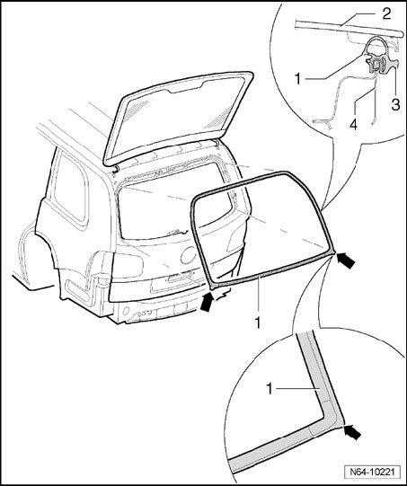

Liftgate Window Glass Weatherstrip: Service and Repair
Hinged Window Seal
NOTE:
- The seal -1- for hinged window -2- of rear lid -4- is a hammer-stroke seal. After removing, it can be re-installed.
- Make sure sealing lip -3- is routed correctly on seal -1-.
- The lower water drains -arrows- must point outward.

- Align seal -1- with water drains -arrows- at lower corners.

- Position seal -1- all around and then knock the seal -1- on.
- If necessary, guide sealing lip -3- out.
- Align corners for water drains -arrows-.